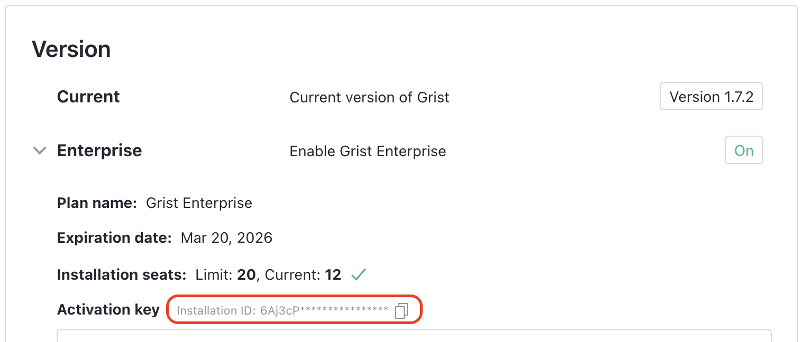

Warning
La traduction proposée ici a été générée automatiquement par le modèle d’intelligence artificielle GPT-4o. Il est probable qu’elle contienne des imperfections.
Mais la bonne nouvelle est que vous pouvez rejoindre la communauté de traduction pour améliorer le contenu fourni ici 👋.
description: Les éléments essentiels pour créer et maintenir une installation Grist autogérée.#
Grist Autogéré#
- description: Les éléments essentiels pour créer et maintenir une installation Grist autogérée.
- Grist Autogéré
- Les essentiels
- Qu’est-ce que Grist Autogéré ?
- Comment installer Grist ?
- Qu’est-ce que le compte administratif ?
- Comment puis-je avoir plus d’un compte administratif ?
- Comment sandboxer des documents ?
- Comment exécuter Grist sur un serveur ?
- Comment configurer une équipe ?
- Comment configurer l’authentification ?
- Existe-t-il d’autres méthodes d’authentification ?
- Comment activer Grist Entreprise ?
- Personnalisation
- Opérations
- Quelles sont les exigences matérielles pour héberger Grist ?
- Quels fichiers Grist stocke-t-il ?
- Qu’est-ce qu’une base de données “principale” ?
- Qu’est-ce qu’un magasin d’état ?
- Comment configurer des snapshots ?
- Comment activer les pièces jointes externes ?
- Comment contrôler la télémétrie ?
- Comment contrôler les vérifications automatiques de version ?
- Comment mettre à jour mon installation ?
- Qu’est-ce que l’ID d’installation ? Changera-t-il si je mets à jour ou déplace le conteneur ?
- Comment supprimer complètement un utilisateur de mon instance ?
- Que faire si j’ai besoin d’une haute disponibilité ?
- Les essentiels
Les essentiels#
Qu’est-ce que Grist Autogéré ?#
Il existe cinq variantes de Grist :
- SaaS (Software as a Service) : Grist est disponible en tant que service hébergé sur docs.getgrist.com. Aucune installation nécessaire. Plans gratuits et payants, avec des limites d’utilisation. Les détails des plans sont disponibles sur notre page de tarification.
- Application de bureau : Grist est disponible en tant qu’application de bureau, construite avec Electron. Elle est disponible en téléchargement sur https://github.com/gristlabs/grist-desktop/releases. Cette application de bureau n’a pas besoin d’internet et n’est liée à aucun compte ou service en ligne.
- Entreprise : Grist est disponible en tant qu’application sous licence qui peut être installée par des entreprises sur leur propre infrastructure avec notre support ou hébergée sur une infrastructure dédiée gérée par Grist. Contient des fonctionnalités propriétaires développées pour des entreprises avec des besoins particuliers.
- Noyau : Grist est disponible en tant qu’application gratuite installée par des développeurs citoyens sur leur propre infrastructure avec le soutien de la communauté. Les documents Grist créés avec nos offres SaaS et Entreprise peuvent être ouverts et modifiés avec le Noyau, et vice versa. Cela établit les documents Grist comme un format fiable pour l’archivage et l’échange.
- Grist Builder Edition : Une version du Noyau pré-emballée pour des fournisseurs de cloud tels que Amazon Web Services ou Microsoft Azure. En savoir plus ici.
Grist auto-hébergé (ou autogéré), qu’il s’agisse de l’Entreprise ou du Noyau, est installé et configuré de la même manière, comme décrit dans les sections suivantes. Grist Builder Edition peut être configuré de la même manière, mais inclut une configuration par défaut pour commencer. Pour plus de clarté, les sections sont étiquetées avec la variante à laquelle elles s’appliquent, par exemple :
Le code source complet de Grist Noyau est toujours disponible sur github.com/gristlabs/grist-core et est sous une licence Apache-2.0. Vous pouvez utiliser et redistribuer le Noyau librement, selon les termes de la licence de logiciel libre. Le code source complet de Grist Entreprise est également disponible, sur github.com/gristlabs/grist-ee, sous une licence propriétaire qui ne confère aucun droit automatique d’utiliser ou de redistribuer le logiciel. Vous pouvez évaluer l’Entreprise pendant 30 jours en utilisant les instructions dans les sections suivantes, ou vous inscrire à notre plan Grist Entreprise et obtenir du support.
Comment installer Grist ?#
Le moyen le plus simple d’installer Grist est en tant que conteneur. Nous allons décrire comment faire en utilisant Docker, mais il existe de nombreux autres outils et services pour exécuter des conteneurs.
Pour essayer Grist avec Docker, créez un répertoire vide pour que Grist y stocke des données (par exemple ~/grist) et ensuite vous pouvez faire :
docker run -p 8484:8484 \
-v ~/grist:/persist \
-e GRIST_SESSION_SECRET=inventez-un-secret-ici \
-e GRIST_DEFAULT_EMAIL=your-email@example.com \
-it gristlabs/grist
Vous devriez alors pouvoir visiter http://localhost:8484 dans
votre navigateur. Vous pourrez déjà créer et modifier des documents Grist,
et ouvrir et modifier des documents téléchargés depuis une autre
installation Grist (comme notre SaaS).
Si vous utilisez un autre outil ou service, voici les points importants :
- Le nom de l’image principale est
gristlabs/grist, qui est notre image Docker combinée Noyau et Entreprise. L’imagegristlabs/grist-ossexiste également, qui utilise uniquement du code libre et open source. Cette image utilise uniquement Grist Noyau, et n’a pas de fonctionnalités d’entreprise disponibles. (Pour certains outils comme Podman, vous devrez peut-être préfixer ces noms d’image avecdocker.io/.) - Un volume (ou montage, ou répertoire) doit être disponible à l’emplacement
/persistdans le conteneur. Il peut être initialement vide - Grist le remplira. Sans ce volume, rien de ce que vous faites ne sera stocké à long terme. - Le port
8484sur le conteneur doit être exposé. Cela peut être changé si vous définissez également la variable d’environnementPORTpour le conteneur. - La variable d’environnement
GRIST_SESSION_SECRETdoit être définie sur quelque chose de secret pour le conteneur.
Installé de cette manière, Grist est accessible uniquement par vous. En général, vous voudrez prendre au moins les étapes suivantes :
- Configurer le sandboxing - cela est important pour limiter ce que les formules peuvent faire.
- Servir depuis un hôte public afin de pouvoir collaborer en direct avec d’autres.
- Activer une méthode d’authentification afin que les utilisateurs puissent se connecter. Souvent, vous voudrez connecter Grist à un service “SSO” (Single Sign-On) que vous utilisez déjà. Nous supportons certaines méthodes d’authentification très générales qui couvrent de nombreux cas, et une méthode d’authentification spéciale pour des cas personnalisés.
- Envisager d’activer le support des snapshots si vous souhaitez que Grist gère les sauvegardes de documents.
Grist sur AWS et Azure#
Vous pouvez également héberger Grist sur AWS et Azure. Des instructions complètes sur ces méthodes d’hébergement sont disponibles sur la page Grist Builder Edition.
Qu’est-ce que le compte administratif ?#
Sur une nouvelle installation Grist, l’utilisateur qui se connecte avec l’adresse e-mail
définie par GRIST_DEFAULT_EMAIL est l’administrateur de cette installation Grist.
Lorsque Grist s’exécute pour la première fois, il créera un
compte défini à la valeur de GRIST_DEFAULT_EMAIL. Notez que si cette
variable n’est pas définie, elle est par défaut you@example.com. Changer la
valeur de GRIST_DEFAULT_EMAIL après que le premier utilisateur administrateur a été
créé révoquera effectivement les permissions d’administrateur du
premier utilisateur et les assignera à la nouvelle adresse e-mail.
Le compte administratif a accès à la page Installation dans le Panneau d’administration où il peut inspecter les détails de l’installation ou activer/désactiver des fonctionnalités telles que la télémétrie ou Grist Enterprise.
Si Grist Enterprise est activé, le compte administratif aura également accès aux Contrôles d’administration
Comment puis-je avoir plus d’un compte administratif ?#
Dans Grist
Enterprise, il est
possible d’avoir plus d’un compte administratif. Cela se fait
via la variable d’environnement GRIST_INSTALL_ADMIN_ORG.
Un prérequis est d’autoriser la création de plusieurs sites d’équipe. Pour
ce faire, assurez-vous que GRIST_SINGLE_ORG n’est pas défini.
Dans une installation Grist multi-équipe, suivez ces étapes :
- Depuis le menu de votre compte utilisateur en haut à droite, créez un site d’équipe Grist
(alias organisation) avec le nom de votre choix (par
exemple,
admins) - À ce site d’équipe, ajoutez les comptes utilisateurs que vous souhaitez désigner comme administrateurs. Leur rôle sur ce site d’équipe doit être “OWNER”.
- Définissez
GRIST_INSTALL_ADMIN_ORGsur le nom du site d’équipe de la première étape (par exemple,GRIST_INSTALL_ADMIN_ORG=admins). - Redémarrez le serveur Grist avec la nouvelle variable d’environnement.
Comment sandboxer des documents ?#
Grist permet des formules très puissantes, utilisant Python. Nous recommandons
de définir la variable d’environnement GRIST_SANDBOX_FLAVOR sur gvisor si
votre matériel le prend en charge (la plupart le feront), pour exécuter des formules dans chaque
document dans un sandbox isolé des autres documents et isolé
du réseau.
docker run ...
-e GRIST_SANDBOX_FLAVOR=gvisor \
...
Pour vérifier que les formules sont évaluées dans un sandbox, vous pouvez créer un document et ensuite vérifier que cette formule donne un résultat vide :
import glob
glob.glob('/etc/*')
Voici quelques raisons pour lesquelles le sandboxing gvisor, tel que configuré pour
Grist, peut échouer, et ce que vous pouvez faire pour diagnostiquer le problème.
XSAVE non disponible#
Votre processeur peut ne pas être pris en charge. Sur x86_64, Sandy Bridge
ou plus récent est nécessaire. Vérifiez que le drapeau processeur XSAVE est défini.
Voici un moyen rapide de tester cela :
grep -q '\bxsave\b' /proc/cpuinfo && echo "XSAVE activé" || echo "XSAVE manquant"
PTRACE non disponible#
La capacité SYS_PTRACE peut ne pas être disponible. Si vous exécutez
dans docker, vous pourriez essayer de l’accorder explicitement, si vous êtes
à l’aise avec sa mise à disposition :
docker run ...
--cap-add=SYS_PTRACE
...
Dans certains environnements cloud tels que AWS ECS, vous devrez peut-être énumérer explicitement cette capacité dans votre configuration de conteneur.
Comment exécuter Grist sur un serveur ?#
Nous vous suggérons de vous familiariser avec tous les autres aspects de
l’autogestion sur cette page avant de servir Grist depuis un hôte public
(surtout Sandboxing).
Lorsque vous le ferez, il est important de dire à Grist d’où il sera servi,
en utilisant la variable APP_HOME_URL. Par exemple, si vous allez
servir depuis https://grist.example.com, faites savoir à Grist comme ceci :
docker run ...
-e APP_HOME_URL="https://grist.example.com" \
...
Vous devrez placer un “proxy inverse” devant Grist pour gérer la “terminaison SSL” (décryptage du trafic chiffré) en utilisant un certificat qui établit la propriété du site. Si vous ne savez pas ce que cela signifie, vous pourriez essayer d’utiliser le Grist Omnibus qui emballe Grist avec un proxy inverse qui utilisera Let’s Encrypt pour obtenir un certificat pour vous automatiquement.
Un travail important d’un tel proxy est de rediriger correctement les connexions websocket. Cela représente deux exigences :
- Assurez-vous que le proxy utilise HTTP 1.1
- Passez les en-têtes HTTP nécessaires Upgrade, Connection et Host afin qu’une connexion HTTP puisse être mise à niveau vers une connexion websocket.
Par exemple, voici une configuration minimale pour nginx, un choix possible pour un proxy inverse.
server {
server_name grist.example.com;
location / {
proxy_pass http://localhost:8484;
proxy_redirect off;
proxy_set_header Host $host;
proxy_set_header X-Real-IP $remote_addr;
proxy_set_header X-Forwarded-For $proxy_add_x_forwarded_for;
# Support WebSocket
proxy_http_version 1.1;
proxy_set_header Upgrade $http_upgrade;
proxy_set_header Connection "upgrade";
}
}
Cette configuration gérera le trafic HTTP de base et les websockets. Elle
nécessite encore une configuration SSL/TLS supplémentaire. Une option simple pour
l’auto-hébergement à petite échelle est d’utiliser certbot par l’EFF.
Comment configurer une équipe ?#
Grist a un concept de “sites d’équipe” qui sont des zones indépendamment gérées et
nommées contenant leurs propres espaces de travail et documents. Les sites d’équipe
peuvent avoir des sous-domaines distincts (comme sur les sites d’équipe hébergés de notre SaaS),
ou être distingués par
un préfixe de chemin spécial. Cela n’a souvent pas de sens pour les installations autogérées, où il y a une seule équipe. Avec un seul domaine et
une seule équipe, le préfixe de chemin spécial (qui ressemble à /o/<team-name>)
est un gaspillage d’espace peu élégant dans les URL. Vous pouvez donc indiquer à Grist d’utiliser une seule équipe en définissant GRIST_SINGLE_ORG (“org” ou “organisation” est un synonyme pour équipe) :
docker run ...
-e GRIST_SINGLE_ORG=cool-beans
Le nom de l’équipe ne doit utiliser que des caractères minuscules a-z, des chiffres
0-9, et le tiret (-). Vous voudrez également peut-être vous pencher sur
Personnalisation du style pour cacher les éléments d’interface utilisateur
dont vous n’avez pas besoin.
Changer la valeur de GRIST_DEFAULT_EMAIL#
Lors de l’utilisation de
GRIST_SINGLE_ORG, la
seule organisation sera également créée initialement et possédée par l’utilisateur
configuré par GRIST_DEFAULT_EMAIL. Si vous changez la valeur de
GRIST_DEFAULT_EMAIL, l’administrateur peut
temporairement perdre l’accès au site d’équipe.
Pour éviter cela, avant de changer GRIST_DEFAULT_EMAIL, utilisez
les options de partage d’équipe pour ajouter de nouveaux propriétaires au site d’équipe,
car en dehors de la création initiale, les administrateurs n’ont pas de
droit automatique à l’adhésion au site d’équipe.
Comment configurer l’authentification ?#
L’authentification peut être configurée de plusieurs manières pour Grist Noyau et Entreprise, en utilisant SAML, OpenID Connect ou des en-têtes transférés. Entre les deux, de nombreux SSO populaires peuvent être connectés comme les connexions Google ou Microsoft.
Pour toute méthode d’authentification, vous voudrez également envisager de définir les variables suivantes :
COOKIE_MAX_AGE: (optionnel) date d’expiration pour le cookie de session Grist, lorsqu’il est défini surnone, le cookie de session sera en modeSession- il doit être supprimé après la fermeture d’un navigateur. S’il est défini sur un nombre, les unités de ce nombre sont des millisecondes.GRIST_FORCE_LOGIN: (optionnel) lorsqu’il est défini surtrue, cela indiquera à Grist de rediriger les utilisateurs anonymes vers une page de connexion.
Pour notre SaaS, nous utilisons un système d’authentification personnalisé basé sur AWS Cognito. Actuellement, nous n’avons pas de plans pour le publier dans le Noyau ou l’Entreprise.
Existe-t-il d’autres méthodes d’authentification ?#
Si les utilisateurs de votre site se connectent via WordPress, ou via un mécanisme personnalisé que vous avez développé, vous voudrez peut-être envisager GristConnect, disponible pour Grist Entreprise.
Comment activer Grist Entreprise ?#
Grist Entreprise peut être activé en visitant la page Installation dans le Panneau d’administration et en cliquant sur le bouton ‘Activer les fonctionnalités Grist Entreprise’. Cela fera redémarrer Grist automatiquement.

Vous devriez maintenant avoir une version non activée de Grist Entreprise, avec une période d’essai de 30 jours.
Les clés d’activation sont utilisées pour exécuter Grist Entreprise après une période d’essai de 30 jours écoulée. Obtenez une clé d’activation en vous inscrivant à Grist Entreprise. Vous n’avez pas besoin d’une clé d’activation pour exécuter Grist Noyau, et pouvez revenir au Noyau à tout moment en utilisant le bouton dans le Panneau d’administration.
Placez le contenu de votre clé d’activation dans une variable d’environnement appelée
GRIST_ACTIVATION, ou placez-la dans un répertoire accessible à Grist et
fournissez le chemin complet vers le fichier avec la variable d’environnement
GRIST_ACTIVATION_FILE. Sans la clé d’activation, il y aura une
bannière indiquant que Grist est en mode d’essai. Une fois la clé d’activation détectée,
cette bannière disparaîtra. Le remplacement de la clé d’activation nécessitera
un redémarrage de Grist.
docker run ...
-e GRIST_ACTIVATION=<la-clé-d'activation-ici> \
-it gristlabs/grist
Personnalisation#
Comment personnaliser le style ?#
L’interface utilisateur de Grist a de nombreux éléments, dont certains peuvent ne pas être pertinents pour vous.
Pour les installations autogérées de Grist,
vous pouvez désactiver de nombreux éléments en utilisant GRIST_HIDE_UI_ELEMENTS.
Ceci est une liste séparée par des virgules des parties de l’interface utilisateur à cacher.
Les noms autorisés des parties sont :
helpCenter,billing,templates,multiSite,multiAccounts.
Les éléments de l’interface utilisateur présents sont également affectés par le fait que GRIST_SINGLE_ORG soit défini.
docker run
...
-e GRIST_HIDE_UI_ELEMENTS=helpCenter,billing,templates,multiSite,multiAccounts \
...
Par défaut, les pages de l’interface utilisateur de Grist ont - Grist ajouté à leur titre. Vous pouvez
changer cela en définissant GRIST_PAGE_TITLE_SUFFIX :
docker run
...
-e GRIST_PAGE_TITLE_SUFFIX=" - Cool Beans" \
...
Vous pouvez définir le suffixe sur "_blank" pour le supprimer complètement.
Vous pouvez également remplacer le style CSS du site si vous définissez
APP_STATIC_INCLUDE_CUSTOM_CSS sur true.
docker run
...
-e APP_STATIC_INCLUDE_CUSTOM_CSS=true \
...
Cela chargera un fichier custom.css supplémentaire. Vous pouvez trouver
un exemple de tel fichier dans le
dépôt Grist Noyau.
Le fichier inclut la plupart de nos variables CSS globales pour les couleurs, et quelques
variables pour le logo affiché dans le coin supérieur gauche. Il n’y a
vraiment aucune limite à ce qui peut figurer dans le fichier, donc la spécification de styles arbitraires est possible. Notez que toutes les règles CSS doivent utiliser
!important pour s’assurer qu’elles ont la plus haute priorité. Sinon,
il est possible que des règles plus spécifiques incluses par notre framework prennent
le pas.
Pour remplacer custom.css, vous pouvez faire votre propre copie et vous assurer que Grist l’utilise. Si le fichier CSS est dans votre répertoire actuel, alors
faites :
docker run
...
-v $PWD/custom.css:/grist/static/custom.css
...
Il est possible de diriger Grist pour charger des ressources statiques depuis un CDN en
définissant APP_STATIC_URL. Si vous le faites, et que vous utilisez du CSS personnalisé,
vous devrez vous assurer que le CSS personnalisé est disponible depuis cette URL de base.
Comment lister des widgets personnalisés ?#
Dans notre SaaS, Grist a une liste de widgets personnalisés préconstruits disponibles dans l’interface utilisateur.

Vous pouvez faire en sorte que votre installation autogérée propose la même liste en définissant ce qui suit :
docker run
...
-e GRIST_WIDGET_LIST_URL="https://github.com/gristlabs/grist-widget/releases/download/latest/manifest.json" \
...
C’est optionnel. Si vous laissez la variable non définie, les documents avec des widgets personnalisés fonctionneront toujours bien, mais vous devrez entrer une URL complète lorsque vous ajoutez des widgets personnalisés, plutôt que de choisir un widget dans la galerie.
Vous pouvez rendre votre propre liste de widgets disponible en forkant
github.com/gristlabs/grist-widget
ou en préparant manuellement un fichier .json sur un serveur public dans le même
format que notre manifest.json.
Pour personnaliser l’apparence des widgets dans la galerie, les champs suivants
peuvent être définis dans le manifest.json :
name: Le titre du widget.description: Une description optionnelle affichée sous le titre du widget.authors: Une liste optionnelle d’un ou plusieurs auteurs du widget. Le premier auteur sera affiché dans le champ “Développeur”.lastUpdatedAt: La date affichée dans le champ “Dernière mise à jour”.
Comment configurer des notifications par e-mail ?#
Dans Grist SaaS, nous envoyons des e-mails lorsqu’un utilisateur est invité à un document ou reçoit une notification de document (mentions de commentaires, modifications de document, etc.). Le même mécanisme est disponible dans Grist Entreprise. Il n’y a pas encore d’équivalent dans Grist Noyau.
Grist utilise Nodemailer à cette fin. Il y a deux variables d’environnement qui doivent être configurées pour l’activer :
GRIST_NODEMAILER_CONFIG: Il s’agit d’une configuration JSON passée textuellement à la méthodecreateTransportde Nodemailer. Référez-vous à la documentation de Nodemailer pour les détails sur ce qu’il faut fournir ici. Notez que cette variable doit contenir le JSON lui-même, et non un chemin vers un fichier JSON.-
GRIST_NODEMAILER_SENDER: Il s’agit d’une autre chaîne de configuration JSON pour définir le champFrom:des e-mails envoyés par Grist. Il prend la forme suivante :{"name": "Nom par défaut de l'expéditeur", "email": "sender.email@example.com"}
Comme ces deux variables doivent être passées en tant que JSON textuel, elles peuvent avoir besoin d’être entre guillemets si elles sont passées depuis un shell. Par exemple,
docker run \
-e GRIST_NODEMAILER_CONFIG='{"host":"smtp.example.com","port":587,"auth":{"user":"username","pass":"swordfish"}}' \
-e GRIST_NODEMAILER_SENDER='{"name":"Grist Admin","email":"admin@example.com"}' \
-e REDIS_URL="redis://hostname/N"
-it gristlabs/grist
...
Notez qu’un magasin d’état est
également requis pour les notifications par e-mail, fourni ci-dessus via REDIS_URL.
Comment ajouter plus de packages python ?#
L’ensemble des packages python disponibles pour une utilisation dans les formules n’est actuellement pas configurable. Vous pouvez ajouter des packages de toute façon si vous êtes prêt à construire et installer votre propre version de Grist.
Avertissement
Les documents Grist créés sur une installation avec des packages python personnalisés ne ramèneront pas ces packages s’ils sont copiés vers une autre installation. Les formules utilisant des packages python personnalisés donneront des erreurs lorsque ces packages ne seront pas disponibles.
Créez un répertoire vide et ajoutez ce qui suit, dans un fichier appelé
Dockerfile :
FROM gristlabs/grist # ou grist-oss ou grist-omnibus
RUN \
apt update && apt install -y openssl && \
python3 -m pip install phonenumbers
Remplacez phonenumbers par le package python ou les packages que vous souhaitez
installer. Vous pouvez maintenant construire votre image Grist personnalisée en exécutant un
docker build dans le répertoire contenant le Dockerfile :
# remplacez "custom" par un nom d'utilisateur ou de l'organisation.
docker build -t custom/grist .
Une fois terminé, vous pouvez utiliser custom/grist à la place de gristlabs/grist(-ee) dans
Comment installer Grist,
et votre bibliothèque python sera désormais disponible à l’importation dans les formules.
Si vous souhaitez que l’importation soit effectuée automatiquement, afin de ne pas avoir à le faire dans les formules, cela nécessite actuellement un changement de code dans sandbox/grist/gencode.py. Si vous êtes à l’aise avec les modifications de code, alors les instructions de construction du dépôt grist-core sont l’endroit où commencer.
Comment configurer des webhooks ?#
Il est possible d’utiliser des webhooks pour activer des intégrations avec des services externes. La documentation des webhooks contient plus de détails.
Notez que lors de l’auto-hébergement, seuls les services externes autorisés par la
variable d’environnement ALLOWED_WEBHOOK_DOMAINS
sont autorisés. Il y a des préoccupations de sécurité avec
l’autorisation de tout domaine, car les services internes de Grist peuvent devenir vulnérables
à la manipulation.
Opérations#
Quelles sont les exigences matérielles pour héberger Grist ?#
Pour héberger Grist en tant que conteneur Linux, voici une configuration connue pour une variété de charges de travail modérées :
- 8 Go de RAM
- 2 CPU
- 20 Go de disque
Grist est emballé pour les architectures CPU suivantes :
- x86_64 (Sandy Bridge ou plus récent si le sandboxing est activé)
- ARM64
Chaque document Grist est une base de données séparée, donc il est difficile de déclarer des exigences minimales absolues sans savoir quels documents seront utilisés. Dans les tests, le modèle de recherche d’investissement fonctionne confortablement servi depuis un conteneur Grist avec :
- 100 Mo de RAM sans sandboxing activé.
- 200 Mo de RAM avec sandboxing activé.
- 1 CPU.
Les exigences en mémoire et en CPU évolueront avec le nombre de documents utilisés simultanément par votre équipe.
Le sandboxing est un problème important pour servir Grist. Il est réalisé en utilisant gvisor. Le sandboxing dépend de la disponibilité de certaines capacités, et peut être indisponible dans des environnements qui n’autorisent pas ou manquent ces capacités. Le sandboxing de Grist est connu pour fonctionner dans les environnements suivants :
- Conteneurs docker réguliers non privilégiés avec les paramètres de sécurité par défaut.
- Instances AWS EC2.
- Conteneurs AWS Fargate, avec
SYS_PTRACEdéfini danslinuxParameters.capabilities.
Le sandboxing de Grist a été signalé comme échouant à s’initialiser sur des processeurs Intel plus anciens qui ne prennent pas en charge la fonctionnalité XSAVE (prise en charge par
Sandy Bridge et ultérieur).
Quels fichiers Grist stocke-t-il ?#
Lorsqu’il est installé en tant que conteneur, Grist s’attend à avoir accès à un
volume persistant, ou à un répertoire partagé avec l’hôte, dans lequel il
stocke tout ce qui doit durer au-delà d’un redémarrage de conteneur.
Concrètement, si vous avez démarré Grist exactement comme décrit dans
Comment installer Grist,
ce répertoire serait ~/grist. Voici ce que vous y trouveriez :
-
Un sous-répertoire appelé
docs, contenant des fichiers*.grist. Ce sont des documents Grist. Les documents Grist sont des bases de données SQLite, donc vous pouvez inspecter ces fichiers avec l’utilitaire standardsqlite3. Vous pouvez également les télécharger sur une autre installation de Grist (comme notre service hébergé) et les visualiser/éditer là-bas. Si vous déplacez ou renommez ces fichiers, Grist ne les reconnaîtra plus. Si le support des snapshots est configuré, il y aura des fichiers supplémentaires à côté de chaque fichier.gristpour suivre son état de stockage. -
Un fichier appelé
grist-sessions.db. Cela contient des informations pour prendre en charge les sessions de navigateur avec Grist. C’est une base de données SQLite. Si redis est configuré, cela est utilisé à la place de ce fichier. -
Un fichier appelé
home.sqlite3. Cela contient des informations sur les équipes, les espaces de travail et les documents (métadonnées uniquement, telles que les noms, plutôt que le contenu des documents tels que les tables et les cellules). C’est une base de données SQLite. Elle est appelée la base de données principale et si PostgreSQL est configuré, cela est utilisé à la place de ce fichier. -
Si vous utilisez Grist Omnibus, il y a d’autres fichiers, y compris :
- Un répertoire
auth, avec une base de données SQLite pour suivre l’état de connexion, et un stockage de tous les certificats créés. - Un répertoire
param, avec des secrets inventés pour l’installation.
- Un répertoire
Qu’est-ce qu’une base de données “principale” ?#
Grist stocke des métadonnées sur les utilisateurs, les documents, les espaces de travail, etc. dans une
base de données appelée la “base de données principale”. Cela ne contient pas le
matériel à l’intérieur des documents tels que les tables et les colonnes, mais contient des noms de documents et des heures de création, par exemple. Par défaut, Grist
créera une base de données principale dans un fichier Sqlite dans le répertoire /persist.
Pour utiliser à la place une base de données PostgreSQL, créez la
base de données ainsi qu’un utilisateur ayant un accès suffisant pour créer des tables,
et définissez les variables suivantes :
- TYPEORM_TYPE - défini sur postgres
- TYPEORM_DATABASE - défini sur le nom de la base de données, par exemple home
- TYPEORM_USERNAME - défini sur le nom d’utilisateur postgres ayant des droits sur la base de données
- TYPEORM_PASSWORD - défini sur le mot de passe postgres ayant des droits sur la base de données
- TYPEORM_HOST - défini sur le nom d’hôte de la base de données, par exemple grist.mumble.rds.amazonaws.com
- TYPEORM_PORT - défini sur le numéro de port de la base de données si ce n’est pas le défaut pour PostgreSQL
Grist est connu pour fonctionner avec PostgreSQL des versions 10 à 16.
Les versions 12 et supérieures, cependant, ont activé par défaut un compilateur JIT qui
est connu pour causer des problèmes avec Grist, qui se manifeste par chaque
opération de cellule prenant quelques secondes notables. Pour les versions Grist avant 1.5.0,
le compilateur JIT de PostgreSQL doit être désactivé pour Grist avec l’argument
de ligne de commande -c jit=off ou via d’autres méthodes de changement de
la configuration PostgreSQL.
Dans un fichier docker-compose.yaml, par exemple, le compilateur JIT peut être
désactivé comme ceci :
postgres:
image: postgres:latest
command: -c jit=off
# autre configuration suit...
À partir de la version Grist 1.5.0, Grist désactivera inconditionnellement la compilation JIT lors de la connexion à PostgreSQL, supprimant le besoin de le désactiver vous-même.
Qu’est-ce qu’un magasin d’état ?#
Grist peut être configuré pour utiliser Redis comme cache d’état externe. Pour
la plupart des fonctionnalités de Grist, cela est optionnel. Il est requis pour le support des webhooks et des notifications.
Il est également recommandé pour le support des snapshots. Pour l’utiliser, il suffit de définir REDIS_URL sur quelque chose comme
redis://hostname/N où N est un numéro de base de données redis.
docker run
...
-e REDIS_URL="redis://hostname/N"
...
Comment configurer des snapshots ?#
La fonctionnalité de stockage cloud de Grist permet la synchronisation automatique des documents Grist et des versions de documents vers un bucket compatible S3 (disponible pour toutes les versions de Grist) ou vers un stockage Azure (dans Grist Entreprise).
Voici un exemple d’exécution de Grist localement, avec des snapshots stockés dans une instance MinIO de test :
# Créer un réseau
docker network create grist
# Démarrer Redis dans notre réseau (recommandé pour les snapshots)
docker run --rm --network grist --name redis redis
# Démarrer MinIO dans notre réseau
docker run --rm --network grist --name minio \
-v /tmp/minio:/data \
-p 9000:9000 -p 9001:9001 \
-e MINIO_ROOT_USER=grist -e MINIO_ROOT_PASSWORD=admingrist \
-it minio/minio server /data -console-address ":9001"
# Visitez http://localhost:9000 et configurez un bucket appelé grist-docs.
# Assurez-vous d'activer la versioning sur le bucket.
# Connectez Grist à Redis et MinIO
docker run --rm --network grist \
-e GRIST_DOCS_MINIO_ACCESS_KEY=grist \
-e GRIST_DOCS_MINIO_SECRET_KEY=admingrist \
-e GRIST_DOCS_MINIO_USE_SSL=0 \
-e GRIST_DOCS_MINIO_BUCKET=grist-docs \
-e GRIST_DOCS_MINIO_ENDPOINT=minio \
-e GRIST_DOCS_MINIO_PORT=9000 \
-e REDIS_URL=redis://redis \
-v /tmp/grist:/persist -p 8484:8484 -it gristlabs/grist
Voici des drapeaux pour faire parler Grist à un bucket AWS S3 en utilisant le client MinIO :
...
-e GRIST_DOCS_MINIO_ACCESS_KEY=$AWS_ACCESS_KEY_ID \
-e GRIST_DOCS_MINIO_SECRET_KEY=$AWS_SECRET_ACCESS_KEY \
-e GRIST_DOCS_MINIO_ENDPOINT=s3.amazonaws.com \
-e GRIST_DOCS_MINIO_BUCKET=grist-docs \
...
Selon les spécifications de MinIO, la région par défaut du bucket est us-east-1. Cette région par défaut peut être remplacée en utilisant le drapeau GRIST_DOCS_MINIO_BUCKET_REGION.
Pour plus de détails, et d’autres options, voir Stockage Cloud.
Comment activer les pièces jointes externes ?#
Suivez ces étapes :
- Activez les snapshots comme dans les instructions ci-dessus.
- Définissez la variable d’environnement
GRIST_EXTERNAL_ATTACHMENTS_MODE=snapshots. - Suivez les instructions pour activer les pièces jointes externes pour chaque document qui en a besoin.
Comment contrôler la télémétrie ?#
Par défaut, les installations Grist n’envoient pas d’informations détaillées à un service central, sauf pour certaines informations de version. Il est utile de permettre à Grist d’envoyer plus d’informations, pour donner à Grist Labs un aperçu limité de votre utilisation, à travers des mesures appelées télémétrie. Cela aidera à guider le développement et à attirer l’attention sur les utilisateurs auto-hébergés en tant que groupe.
Le moyen le plus simple pour un propriétaire d’une installation Grist de choisir d’envoyer
la télémétrie à Grist Labs est de cliquer sur le bouton “Opter pour la télémétrie” sur
la bannière “Support Grist” sur la page principale de l’installation.
Si vous ne souhaitez pas opter pour cela, vous pouvez ignorer la bannière.
La bannière est affichée uniquement au propriétaire de l’installation.
Le propriétaire de l’installation est l’utilisateur dont l’adresse e-mail
correspond à la variable d’environnement GRIST_DEFAULT_EMAIL (si définie).

Vous pouvez contrôler la télémétrie à tout moment en utilisant la page “Support Grist”, si vous êtes le propriétaire de l’installation.

Plutôt que d’utiliser des boutons pour opter pour la télémétrie,
vous pouvez définir la variable d’environnement GRIST_TELEMETRY_LEVEL sur
limited. Cela a le même effet que le bouton “Opter pour la télémétrie”.
La variable d’environnement GRIST_TELEMETRY_LEVEL,
si définie, prend la priorité sur tout paramètre effectué de manière interactive.
Les valeurs recommandées sont limited ou off.
Dans tous les cas, lisez télémétrie limitée pour des détails exacts sur les données envoyées, et aperçu de la télémétrie pour plus d’explications. Une méthode interactive pour contrôler la télémétrie n’est disponible que pour les versions Grist Noyau actuellement. Dans tous les cas, le défaut est de ne pas envoyer de télémétrie.
Comment contrôler les vérifications automatiques de version ?#
Les images Docker par défaut pour Grist Noyau et Entreprise sont activées avec un paramètre pour effectuer des vérifications de mise à jour hebdomadaires et informer l’administrateur de l’installation si de telles mises à jour sont disponibles. Ce comportement peut être désactivé depuis le Panneau d’administration via le bouton ‘Vérification automatique hebdomadaire’. Vous pouvez cliquer sur ‘Vérifier maintenant’ à tout moment pour voir si une nouvelle image Docker Grist est disponible.
De plus, il est également possible de désactiver les vérifications automatiques en
définissant la variable d’environnement
GRIST_ALLOW_AUTOMATIC_VERSION_CHECKING=false pour l’image Docker.
D’autre part, l’image Docker gristlabs/grist-oss a des valeurs par défaut moins strictes. Elle contient uniquement du code libre et open-source, sans l’option d’activer les fonctionnalités Enterprise de Grist Labs, et a cette vérification désactivée. Si désiré, la vérification automatique de version peut être activée pour
cette image Docker en définissant la variable d’environnement
GRIST_ALLOW_AUTOMATIC_VERSION_CHECKING=true.
La vérification automatique de version envoie trois informations à un service maintenu par Grist Labs :
- Le numéro de version de l’installation
- S’il s’agit d’une installation Noyau ou Entreprise
- Un numéro d’identification d’installation unique et anonymisé
Ces informations anonymisées aident Grist Labs à déterminer à quelle vitesse les mises à jour critiques sont adoptées par la communauté. Cela donne également une mesure anonymisée de l’utilisation de Grist, ce qui peut aider à diriger l’attention des développeurs vers le support de l’auto-hébergement. Pour les administrateurs, cette vérification peut être utile pour rester à jour, surtout avec les versions spéciales liées à la sécurité qui peuvent être publiées en dehors du cycle de publication habituel.
Comment mettre à jour mon installation ?#
Nous publions actuellement de nouvelles images Grist Noyau et Entreprise à environ des intervalles hebdomadaires. Grist gère toutes les migrations qui peuvent être nécessaires pour les documents ou les bases de données qu’il utilise. Des utilitaires tels que Watchtower peuvent maintenir votre version de Grist à jour pour vous. Nous pouvons également installer et maintenir des installations Grist auto-hébergées pour les utilisateurs Enterprise. Contactez-nous pour plus d’informations.
Qu’est-ce que l’ID d’installation ? Changera-t-il si je mets à jour ou déplace le conteneur ?#
Les clés d’activation utilisées pour Grist Enterprise sont normalement liées à un ID d’installation particulier, qui est un identifiant unique généré aléatoirement pour votre instance. Vous pouvez trouver votre ID d’installation dans la section “Version” du Panneau d’administration :

L’ID d’installation est lié à la base de données principale plutôt qu’à la machine hôte ou au conteneur. Il ne changera pas si vous mettez à jour le conteneur ou le déplacez vers une autre machine, tant que la base de données de l’application reste la même. Si la base de données est Postgres, l’ID d’installation est préservé lors de toute transition qui préserve les données contenues par cette base de données (par exemple, sauvegarde et restauration depuis la sauvegarde). Si la base de données est le SQLite par défaut dans un volume persistant, l’ID d’installation est préservé lors de toute transition qui préserve le contenu de ce volume.
Comment supprimer complètement un utilisateur de mon instance ?#
L’administrateur de l’installation peut gérer l’accès — y compris supprimer des utilisateurs — via la zone Contrôles d’administration dans le Panneau d’administration.
Que faire si j’ai besoin d’une haute disponibilité ?#
Nous avons développé une expertise dans l’hébergement d’installations Grist très occupées, avec de nombreux utilisateurs, y compris comment mettre à jour avec un minimum de perturbation, et comment évoluer pour gérer une charge lourde. Nous serions heureux d’aider les clients Entreprise ayant des besoins de cette nature.